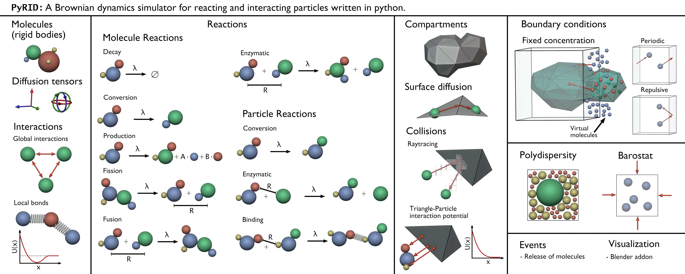

PyRID: A Brownian dynamics simulator for reacting and interacting particles written in python.
Disclaimer: PyRID is currently in early state development (version 0.1). As such, there is no guaranty that any of the functions are bug free. Careful validation of any results is recommended.
PyRID is a tool for particle based reaction diffusion simulations and is highly influenced and inspired by
PyRID is an attempt to combine several features of the above mentioned tools, which include
unimolecular and bimolecular Reactions (ReaDDy, MCell)
pair-interactions (ReaDDy)
mesh based compartments and surface diffusion (MCell)
pure Python implementation (Sarkas)
Introduction
Several tools have been developed that target the simulation of cell biological processes. MCell and Smoldyn, e.g., are popular representatives of the category of particle-based reaction diffusion simulators. Both are powerful tools but cannot simulate particle-particle interactions. Another tool, ReaDDy, has also been developed to fill the gap between classical molecular dynamics and particle-based reaction-diffusion simulations and allows for reactions and interactions between particles. So why do we need PyRID then? While ReaDDy combines some of the features of MCell, Smoldyn, and classical MD, some features are missing.

PyRID supports triangulated mesh geometries, whereas ReaDDy only supports spherical or box-shaped compartments via external potentials. While these two shapes are sufficient in some situations, they are not in others where we want to, e.g., combine compartments to investigate narrow escape properties or where we are interested in the effect of more complex shapes on molecule dynamics.
PyRID supports rigid bead models of molecules. Rigid bead models are a method of minimal coarse-graining that have some essential benefits. A rigid bead topology replaces strong, short ranged interactions between atoms. Thereby, integration time steps can be several orders larger than in atomic-scale simulations. Usually, the beads of a rigid bead model do not represent single atoms but pattern the geometry of the molecule of interest [1], significantly reducing the number of particles that need to be simulated. In addition, experimentally or theoretically estimated diffusion tensors can be used to describe the diffusive motion of molecules accurately. Importantly, patches on the bead model surface can describe multivalent protein-protein interactions.
PyRID accounts for polydispersity of particle sizes. Polydispersity, however, becomes a critical performance issue if we would like to simulate proteins of very different sizes or even proteins in the presence of large diffusing structures such as synaptic vesicles. PyRID uses a hierarchical grid data structure such that polydisperse systems can be simulated with basically no performance loss.
PyRID supports fixed concentration boundary conditions. These can be useful if we would like to simulate sub-regions within a larger system. PyRID supports fixed concentration boundaries for volume and surface molecules and even supports the overlap of mesh compartments with the simulation box boundary.
PyRID supports simulations in the NPT ensemble using the Berendsen barostat.
PyRID can be modified and expanded reasonably easily by anyone with solid knowledge of the Python programming language. Also, by using technologies such as Cython, PyPy, and Numba, Python can reach up to C speed! Using Numba, the MD tool Sarkas has shown that Python is even suited to do molecular dynamics simulations, although still limited to a single core and single thread computation! Inspired by Sarkas, PyRID is also solely written in Python by extensively using Numbas jit compilation. Thereby, PyRID can achieve comparable performance to that of ReaDDy. In addition, PyRID is lightweight, with the core modules having less than 10.000 lines of code (excluding documentation).
{kind=link}
Feature comparison
Please note that this feature comparison is not complete and biased towards PyRID as only the main features of PyRID are compared to the other tools. Each of the tools mentioned here have some unique abilities and features that are not necessarily supported by the other tools/PyRID. However, to do an all-encompassing comparison would go beyond the scope of this documentation.
Features |
PyRID |
|||
|---|---|---|---|---|
Reactions |
Very Good (zeroth order, unimolecular,
|
Good |
Excellent (Integration with BioNetGen) |
Excellent (Integration with BioNetGen) |
Reaction accuracy |
Volume: Good (Not exact close to
|
Volume: Very Good (Not exact close to boundary,
|
Volume: Very Good,
|
Volume: Very Good,
|
Diffusion |
Anisotropic translational and rotaional
|
Isotropic translational diffusion |
Isotropic translational diffusion |
Anisotropic translational diffusion |
Molecular structure |
Molecules modeled explicitly
|
Molecules modeled explicitly
|
Indirectly by internal state
|
Indirectly by internal state variables
|
Surfaces |
Arbitrary surfaces
|
Only via external potentials (Box and Sphere) |
Arbitrary surfaces
|
Arbitrary surfaces (6 elementary shapes,
|
Interactions |
Selection of several pair-potentials,
|
Selection of 4 potentials, custom potentials
|
No Interactions |
/ Excluded volume approximation for spheres. |
Boundary Conditions |
Periodic, Repulsive, Fixed concentration
|
Periodic, Repulsive |
Periodic, Repulsive, Fixed concentration |
Periodic, Repulsive, Fixed concentration
|
Polydispersity |
Efficient simulation of polydisperse system
|
Polydisperse systems result in performance drop. |
Does not apply |
Does not apply |
API |
Python |
Python |
Blender GUI, Python |
Python, Text based |
Modifiability |
Excellent (All source code in python,
|
Ok (Requires changing C++ source code) |
Ok (Requires changing C++ source code) |
Ok (Requires changing C++ source code,
|